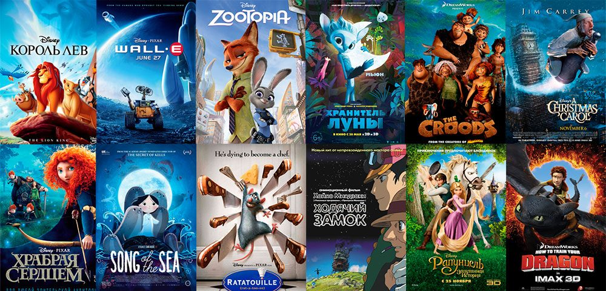
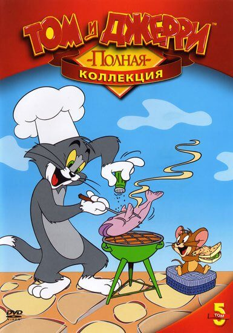

3. Создать группу радиокнопок, с помощью которой можно сменить некоторую картинку на картину с мастью карты, которая указана в качестве подписи соответствующей радиокнопки (создайте четыре варианта выбора). Создайте обработку события формы onreset появлением строки «ПРИВЕТ,МИР» в одностроковом поле ввода информации данной формы.
 